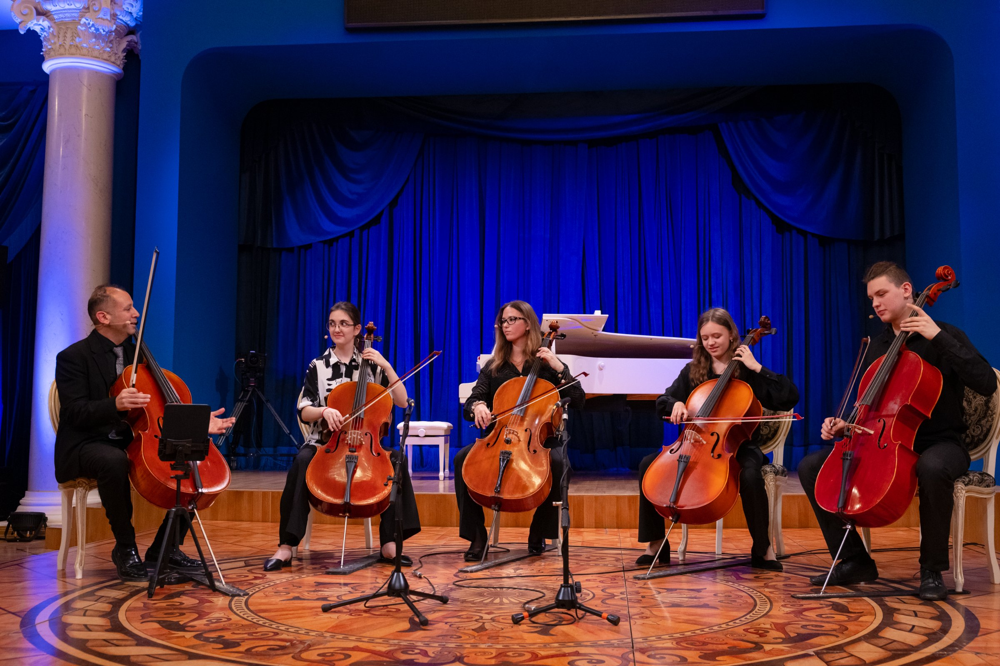
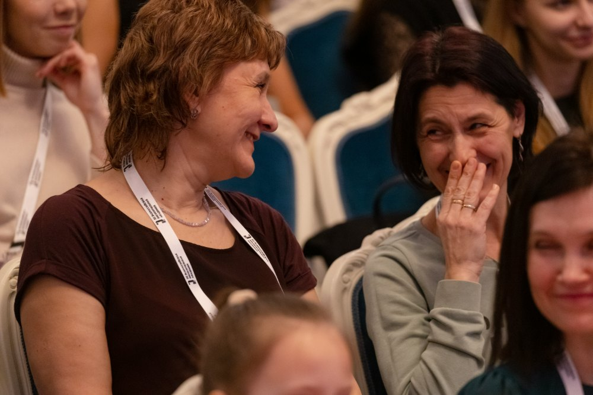
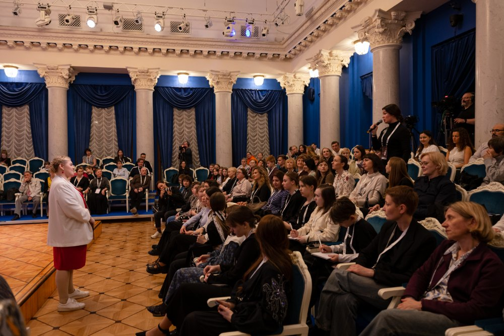
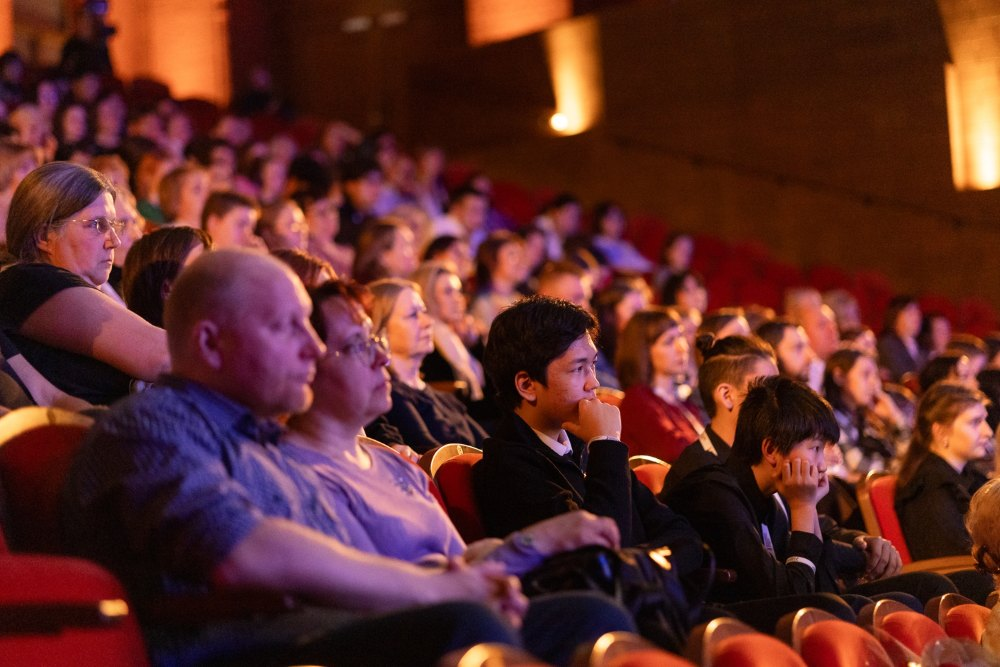
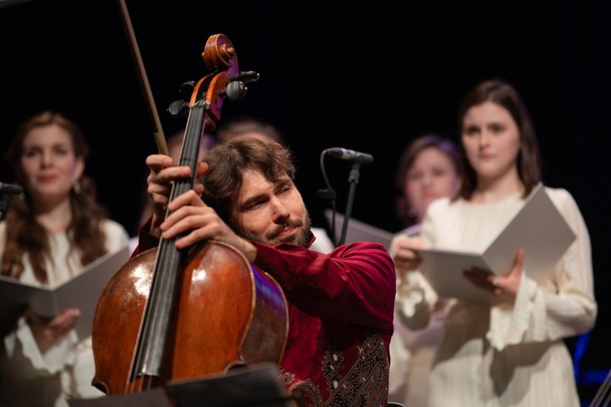
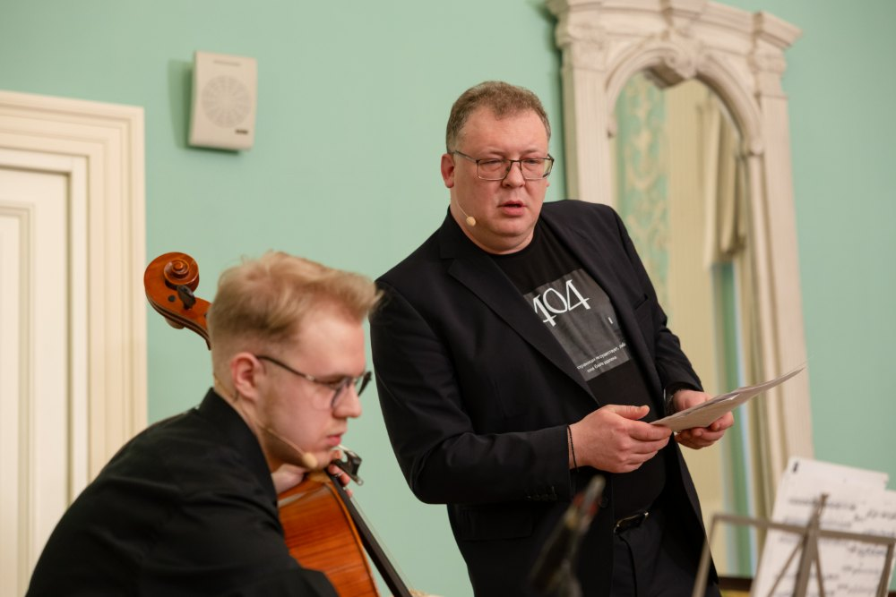
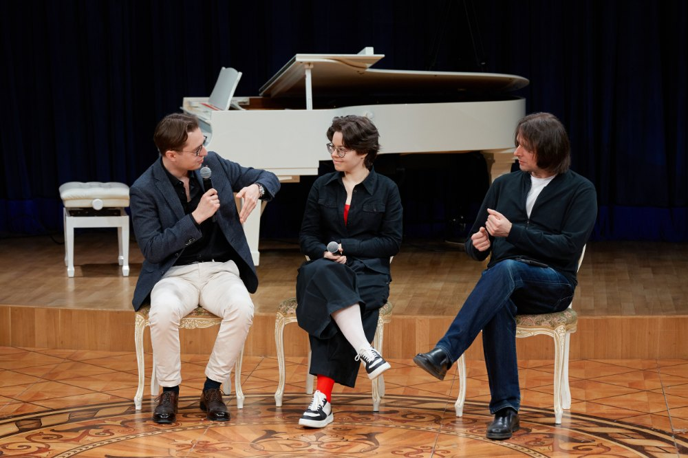
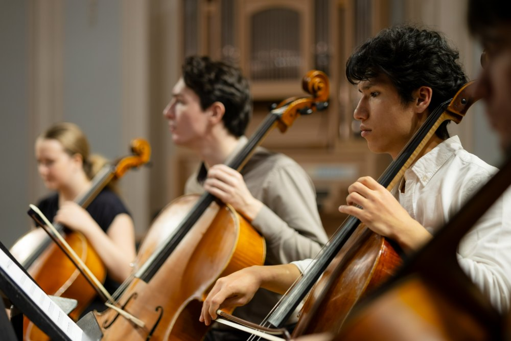
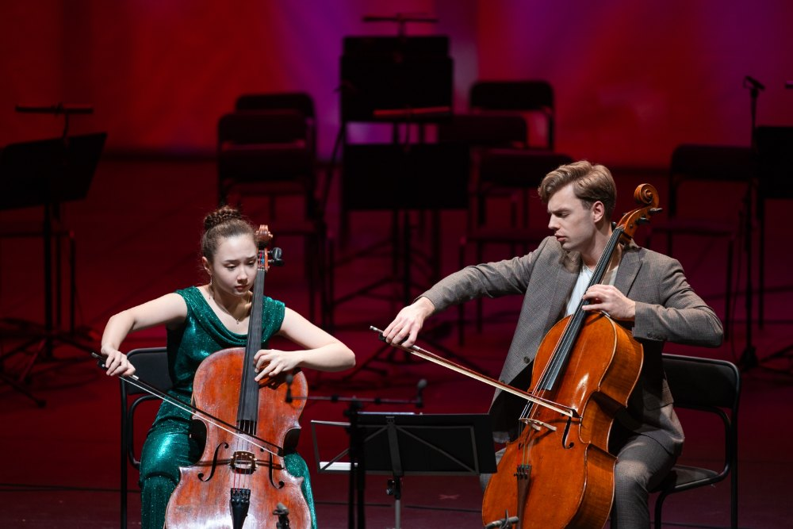

Часто задаваемые вопросы
Музыкантам, которые хотят участвовать в проектах
Порядок участия зависит от проекта. Помимо открытых прослушиваний, могут проводиться отдельные наборы и отборы. Условия одного проекта не распространяются автоматически на остальные.
Единых требований для всех проектов нет. Возраст участников, необходимый уровень подготовки и другие условия определяются форматом и задачами конкретной программы.
Да. Музыканты могут подавать заявки независимо от места жительства. При выборе проекта необходимо учитывать его формат, место проведения и даты.
Участие музыкантов во всех проектах Виолончельной академии бесплатное.
Заявки музыкантов рассматриваются в рамках объявленных прослушиваний и наборов в конкретные проекты. Академия не осуществляет постоянный менеджмент артистов.
Если вы хотите предложить совместный проект, информация о таких обращениях представлена в разделе «Сотрудничество».
Да. Сотрудничество может ограничиваться одним проектом или продолжаться в разных форматах. Некоторые музыканты регулярно участвуют в деятельности Академии, другие присоединяются к отдельным программам. Условия совместной работы определяются в каждом случае отдельно.
Прослушивания позволяют музыкантам представить себя и познакомиться с Академией, а её команде — познакомиться с исполнителями для возможных совместных проектов.
Предложения зависят от конкретного музыканта и задач Академии. Приглашение может касаться одного или нескольких проектов и поступить как по итогам прослушиваний, так и позднее. Участие в прослушиваниях не гарантирует приглашения в конкретную программу.
Подробнее — на странице «Открытые прослушивания».
Да. В совместных проектах Академии участвуют пианисты и музыканты других специальностей. Для них также могут быть доступны отдельные образовательные мероприятия. Возможность участия зависит от конкретного проекта.
Информация об этих направлениях представлена на отдельных страницах — «Репетиторий» и «Инструментальный фонд».
Виолончельная академия ведёт деятельность в течение всего года. Концерты, образовательные программы, медиапроекты, исследовательская и издательская работа составляют разные направления её деятельности. Ежегодная Всероссийская виолончельная академия — один из её проектов.
Слушателям и посетителям мероприятий
Да. Для посещения концертов не требуется специальная музыкальная подготовка. Выбрать событие можно по программе, составу исполнителей или описанию в афише. Мероприятия Академии адресованы как профессиональному сообществу, так и широкому кругу слушателей.
Можно посетить концерт, посмотреть записи выступлений или обратиться к просветительским материалам Академии. Для знакомства с инструментом у нас есть отдельная страница в разделе “Слушателям”
Актуальные события представлены в разделе «Афиша». В анонсах указаны программа, участники, дата и место проведения, а также условия посещения.
Да. Концерты и другие открытые мероприятия могут посещать все заинтересованные слушатели. Условия посещения указаны в анонсе конкретного события.
Эта информация размещается в анонсе мероприятия. Условия могут различаться в зависимости от события и площадки. Бесплатное участие музыкантов в проектах не означает свободного входа на все концерты.
Такая возможность предусмотрена на отдельных мастер-классах. Информация о доступе слушателей и порядке регистрации публикуется в объявлении о мероприятии.
Для некоторых мероприятий Академия организует трансляции или публикует записи. Ссылки размещаются на сайте и в официальных сообществах. Наличие записи или трансляции зависит от конкретного события.




Любителям игры на виолончели
Да. Любителям адресованы концерты, открытые мероприятия, лекции и просветительские материалы. Академия также развивает специальные образовательные курсы и проекты для любителей игры на виолончели.
Следите за объявлениями на сайте и в официальных сообществах Академии. В описании каждой программы указывается, кому она адресована, как устроены занятия и какая подготовка необходима.
Нет. Материалы, опубликованные в открытом доступе, доступны независимо от участия в проектах. Можно смотреть лекции и записи выступлений, читать публикации и знакомиться с виолончельным искусством в удобном темпе.
Педагогам, студентам и исследователям
Этой теме посвящён лекционный цикл «История виолончельного исполнительства» с Татьяной Лукашиной. В нём рассматриваются развитие виолончельного искусства, исполнительские школы и деятельность выдающихся музыкантов.
Выпуски представлены в открытом доступе. Подробнее — на странице проекта.
Одно из направлений издательской деятельности Академии — CelloЖурнал, посвящённый виолончельной культуре. Информация о выпусках, электронной и печатной версиях представлена на странице журнала.
Да. Среди издательских проектов — переиздание четырёхтомного труда Льва Гинзбурга под научной редакцией Татьяны Лукашиной.
Информация об издании представлена в разделе, посвящённом исследовательской и издательской деятельности Академии.
Академия готовит сборники переложений на основе нотного архива Анатолия Павловича Никитина, переданного ей в июне 2026 года.
Информация о работе с архивом и подготовке сборников представлена на соответствующей странице сайта.
Онлайн представлены лекции и просветительские видеопроекты, записи выступлений, журнал и другие публикации. Академия также развивает образовательные видеокурсы.
Содержание и условия доступа указаны на страницах соответствующих проектов.




Родителям юных музыкантов
Возможность участия зависит от возраста, подготовки ребёнка и условий конкретного проекта. Общего возрастного ограничения для всей деятельности Академии нет. Перед подачей заявки необходимо ознакомиться с требованиями выбранной программы.
Ориентируйтесь на описание проекта: кому он адресован, каков формат занятий и какие требования предъявляются к участникам. Если после ознакомления остаются вопросы, воспользуйтесь контактами, указанными в объявлении, или разделом «Контакты».
Авторам проектов, партнёрам и представителям СМИ
Академия рассматривает предложения, связанные с направлениями её деятельности. Информация о возможностях сотрудничества и порядке обращения представлена в разделе «Сотрудничество».
Для обращений представителей СМИ используйте контактную информацию в разделе «Контакты». В запросе укажите издание или площадку, тему обращения и предполагаемые сроки.
Новости и связь с Академией
Обратитесь к команде Академии через раздел «Контакты». Если вопрос касается конкретного проекта, укажите его название, чтобы обращение можно было направить ответственному сотруднику.